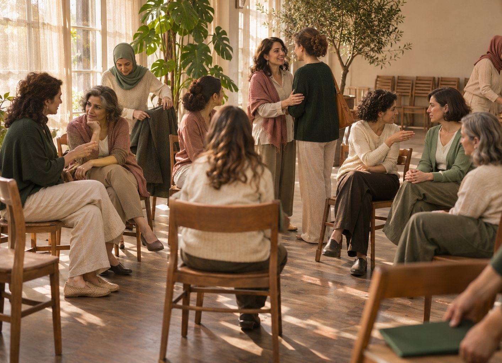
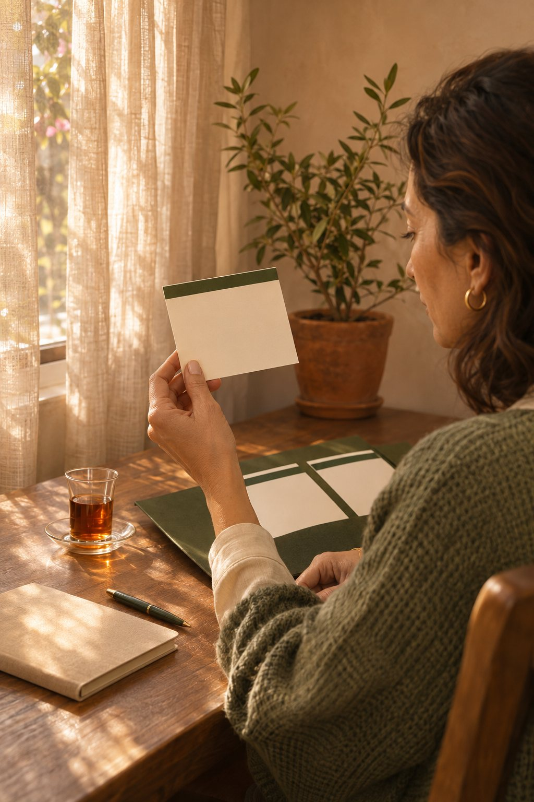

Opening resetافتتاح هادئ
Breath, posture, arrival, and group rhythm.تنفّس، حضور، وتهيئة إيقاع المجموعة.

Hosted circlesدوائر مستضافة
The three-hour Women in Power Circle, for your studio, association, NGO staff group or women’s network. You bring the room and the women; Dorina brings the method, the run of the morning and a printed kit for every woman.دائرة قوّة للنساء لمدة ثلاث ساعات، لاستوديو أو جمعية أو فريق عمل في منظمة أو شبكة نسائية. أنتِ تؤمّنين المكان والنساء، ودورينا تحضر المنهج ومسار اللقاء وحقيبة أدوات مطبوعة لكل امرأة.
The formatالصيغة
Breath, posture, arrival, and group rhythm.تنفّس، حضور، وتهيئة إيقاع المجموعة.
Body cue, emotion word, trigger map, response, support, ritual.إشارة جسد، كلمة شعور، خريطة محفّز، استجابة، دعم، وروتين.
Seven-day integration and a private Bad-Day Card.متابعة سبعة أيام وبطاقة شخصية للأيام الصعبة.
You can shape the context: the group, the theme from the method, the timing. The content stays practical wellbeing education, the same as in every circle.يمكنكِ تحديد السياق: المجموعة، والموضوع من ضمن المنهج، والتوقيت. ويبقى المحتوى توعية عملية بالرفاه، كما في كل دائرة.
How it worksكيف تتمّ

Step 1المرحلة 101
The short form below. WhatsApp opens with your details so Dorina has them straight away.الاستمارة القصيرة أدناه. يُفتح واتساب ببياناتكِ لتصل إلى دورينا مباشرة.
Step 2المرحلة 202
To fit the circle to your group: who is coming, the theme, the room.لتكييف الدائرة مع مجموعتكِ: مَن سيحضر، الموضوع، والمكان.

Step 3المرحلة 303
50% on confirmation; the rest within 7 days of the circle.50% عند التثبيت، والباقي خلال 7 أيام من الدائرة.

Step 4المرحلة 404
Three hours, a printed kit for every woman, and seven days of follow-up.ثلاث ساعات، حقيبة أدوات مطبوعة لكل امرأة، وسبعة أيام من المتابعة.
Enquireاستفسري
Five short fields. When you send, WhatsApp opens with your enquiry ready, so nothing gets lost.خمس خانات قصيرة. عند الإرسال يُفتح واتساب باستفساركِ جاهزاً، فلا يضيع شيء.